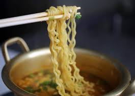

Ramen

Recipe Description
There is beauty in simplicity and struggle meals. The instant ramen is one
of them. This recipe pioneered by my aunt. Which adds Mexican flare to it
as well as umami flavors thanks to dark sauces.
Ingredients
- Instant Ramen (shrimp recommended)
- Maggi Sauce
- English (worcestershire) Sauce
- Hot sauce (Valentina)
- Lime
Steps
- Cut lime in half
- Cook ramen according to instructions
- Once Ramen is cooked, add sauces
- 5 part English sauce
- 2 part Maggi sauce
- 1 part Hot sauce
- Add lime juice
-
If it's a big lime, just half. If it's a small lime, the whole thing